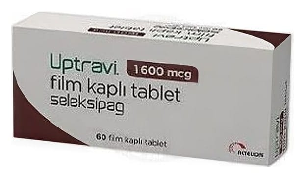

Uptravi 1600 mcg Film Kaplı Tablet, 60 Adet

Ne için kullanılır
KT · Bölüm 1UPTRAVİetkin maddeolarak seleksipag içeren bir ilaçtır. "Prostasiklin" adı verilendoğal madde ile benzer şekilde kan damarlarına etki eder, kan damarlarını gevşetir ve genişletir. UPTRAVİyuvarlak, kahverengi renkli, bir yüzünde “16” oymalı film kaplı tablettir. UPTRAVİ, 60 tablet içeren blister ambalajlarda bulunur. UPTRAVİ, endotelin reseptör antagonistleri veya fosfodiesteraz tip 5 inhibitörleri olarak bilinendiğer pulmoner arteriyel hipertansiyon (PAH) ilaçları ile hastalığı yeterince kontrol edilemeyen erişkin hastalarda PAH'ınuzun süreli tedavisindekullanılır. Hasta bu ilaçları kullanamayacaksa, UPTRAVİtek başına da kullanılabilir. PAH, kanı kalpten akciğerlere (pulmoner arterlere) taşıyan kan damarlarındaki kan basıncının yüksek olduğu bir hastalıktır. PAH hastası olan kişilerde bu arterler daralır ve kalp kanı bu damarlardan akciğerlerepompalamak için daha çok çalışmak zorunda kalır. Bu da kişinin kendisini yorgun hissetmesine, baş dönmesine,nefes darlığına ve diğer belirtileriyaşamasına sebep olabilir. UPTRAVİdoğal madde olan prostasiklinebenzer etki göstererekpulmoner arterleri genişletir ve sertliklerini azaltır. Buda kalbin kanı pulmoner arterlere pompalamasını kolaylaştırır. UPTRAVİ pulmoner arterlerdeki basıncı düşürür. PAH belirtilerinihafifletir ve PAH hastalığının ilerlemesini yavaşlatır.